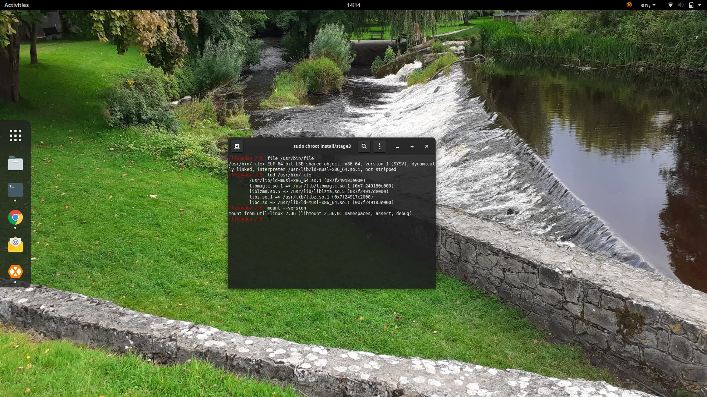
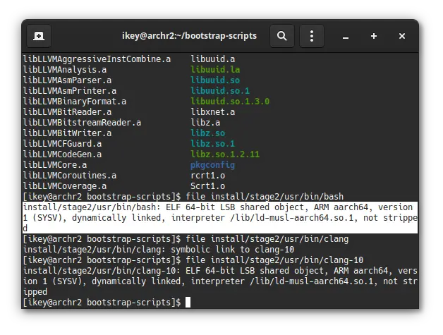
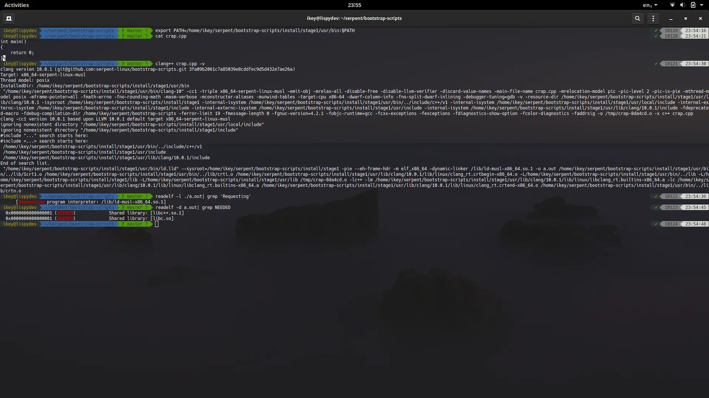

Wow, has it been a hectic few weeks, and it definitely shows: last time
we blogged it was about re-bootstrapping with glibc. Feels like ancient news
already! So, what's new in the world of Serpent OS? Apart from yours truly
now being proud parent to a beautiful baby girl, work has resumed on
the development of Moss, our package manager. And it builds stuff. Awesomely.
Let's quickly catch up with those updates and see where we're headed next.
We're now able to build the majority of a moss package. Notice I've made
a distinction there. So, we're able to run the build instructions, and use
all of the metadata, configuration and macros available. The only thing
we're not actually doing is dumping the built files into a binary package.
{{}}
We're able to do the build-system part rather well, now. Right now
we support the following features in the build system:
Multiple, profile-based architecture support
Automatic -m32 profile based cross compilation support for 32-bit libraries on 64-bit OS
Basic Profile Guided Optimisation via the workload key. Set a workload, optimise accordingly.
LLVM Context Sensitive Profile Guided Optimisation. This is default for LLVM with the workload key, and comes for free, with multiple build stages.
Profile based tuning options, such as optimize for speed, size, disabling hardening, etc.
Trivially switch between gnu and llvm toolchain in stone.yml, with profiles knowing the right flags to use with tuning options.
Recursive macro support in build scripts, defined on per-profile level
Architecture specific profiles support in stone.yml, i.e. profiles -> aarch64 -> setup: to avoid if/else spaghetti.
Now that the huge amount of scaffolding work has been done, we can actually turn the results of builds
into installable binary packages using our moss.format.binary module. We'll add some magic sauce to
have automatic subpackages + inter-package dependencies, along with the expected automatic runtime
dependencies + such. Cue some linting, et voila, build tool that's a pleasure to work with.
Once we have all those packages building, we'll need a way to install them. Luckily some scaffolding
is in place for this already, and it won't take much effort to support moss install somepkg.stone.
Then we throw a few dozen packages in the mix, add some dependency handling, repo support, Bob's your
uncle, and your aunt is downloading exclusive early-access images from our Open Collective as soon
as they're available. :O
It seems like only yesterday we announced to the world a Great Experiment.
It was in fact 2 months ago, and a whole lot of work has happened since that point. A few take-homes are immediately clear, the primary
one being the need to be a community-oriented Linux distribution.
To quote ourselves 2 months ago:
If the experiment is a success, which of course means having tight controls on scope and timescale,
then one would assume the primary way to use Serpent OS would be through some downstream repackaging
or reconfiguration, i.e. basing upon the project, to meet specific user demand.
It turns out that so far the experiment has been successful, and being forkable is still at the very
heart of our goals. Others have joined us on our journey, and expressed the same passion in our goals
as we have. A community has formed around the project, with individuals sharing the same ambitions
for a reliable, rolling operating system with a powerful package manager.
Over the past 2 months we've transformed from set of ideas into a transparent, community-first organisation
with clear leadership and open goals. I've stepped into the Benevolent Dictator For Life position, and Peter
has taken on daily responsibilities for the project running. Aydemir is now our treasurer on Open Collective,
and many individuals contribute to our project.
No need to rehash this, but the defining feature of Serpent OS has clearly become moss, something initially
not anticipated when we started. A read-only root filesystem, transactional operations, rollbacks, deduplicating
throughout and atomic updates. Combine that with a rolling release model, stateless policy and ease-of-use,
the core feature-set is already powerful.
In recent weeks we've been working on libwildebeest and libc-support, primarily as a stop-gap to provide
glibc compatibility without using glibc. While musl has many advantages, it is clear to us now that writing
another libc through our support projects isn't what we originally planned. With that in mind we're adopting
glibc and putting our musl works under community ownership, until such time as reevaluation shows that musl is
what is needed in Serpent OS. Note the primary motivator here is investing our efforts where it makes sense,
and obtaining the best results in the most manageable fashion for our users.
Our new toolchain configuration will be as follows:
LLVM/clang as primary toolchain
libc++ as C++ library
glibc as C library
gcc+binutils (ld.bfd) provided to build glibc, elfutils, etc.
Permitting per-package builds using GCC, i.e. kernel to alleviate Clang IAS issues.
Thus our toolchain will in fact be a hybrid GNU/LLVM one. This will allow both source and binary compatibility
with the majority of desktop + server Linux distributions, facilitating choice of function for our users.
It should be noted this decision has been made after much discussion internally, on our IRC, on our OpenCollective,
etc. Our bootstrap-scripts is being improved to support both glibc and musl, so that the decision can continuously
be reviewed. If we reach a position whereby musl inclusion once again makes sense, thanks to atomic updates
from moss, it will be possible to switch.
Initially Serpent OS emerged as a collective agreement on IRC as a set of notions as opinions. Over the past few
months those opinions have solidified into tangible ideas, and a sense of community. In keeping with what is
right for the community, our messaging has been reworked.
It is fair to say our initial stance appeared quite hostile, as a bullet-point list of exhaustion with past
experiences. As we've pivoted to being a fully community-oriented distribution, we've established our goals
of being a reliable, flexible, open, rolling Linux distribution with powerful features imbued by the
package manager, and an upstream-first approach.
As such we've agreed to not let our own pet-peeves interfere with the direction of the project, and instead
enable users to do what they wish on Serpent OS, be it devops, engineering, browsing, gaming, you name it.
We're a general purpose OS with resilience at the core.
Our focus is on the usability and reliability of the OS - thus our efforts will be invested in areas such
as the package manager, hardware enabling, the default experience, etc.
So, strap yourself in, as we're fond of saying. Development of Serpent OS is about to accelerate rapidly.
Following quickly on the heels of yesterday's announcement that the binary format has been defined, we've
now implemented the initial version of our source format. The source format provides metadata on a package
along with instructions on how to build the package.
The next step of course, is to implement the build tool, converting the source specification into a binary package
that the end user can install. With our 2 formats defined, we can now go ahead and implement the build routines.
The eagle-eyed among you will already see this is a derivation of the package.yml format I originally created
while at Solus. Minor adaptations to the format have been made to support multiple architectures
via the profiles key, and package splitting behaviour has now been grouped under a packages key to make
the structure more readable.
In package.yml, one would have to redefine subpackage summaries as a key in a list of the primary summary key,
such as:
rundeps:-primary-run-dep-dev:secondary-run-depsummary:-Some Summary-dev:Some different summary
We've opted to group "Package Definition" behaviour into core structs, which are allowed to appear in the root-level
package and subpackages:
In keeping with the grouping behaviour, we're baking multiple architecture configurations into the YML file. A common
issue encountered with the older format was how to handle emul32:
Our new approach is to group Build Definitions into the root level struct, which may then individually be overridden for
each architecture. For example:
As you can see it is highly similar to package.yml - which is a great format. However, with our tooling and aims being
slightly different, it was time to reevaluate the spec and bolster it where appropriate. We're happy to share our
changes, but in the interest of not causing a conflict between the 2 variants, we'll be calling ours "stone.yml".
Our main motivation came from the tooling, which is written in the D language. With D we were able to create a strongly
typed parser and explicit schema, and with a struct-based approach it made it more trivial to group similar
definitions.
Other than that, we have the same notions with the format, intelligent automatic package splitting, ease of developer
experience, etc.
The core team have been hard at work lately implementing the Moss package manager.
We now have an initial version of the binary format that we're happy with, so we thought we'd share a progress update
with you.
Briefly, the binary container format consists of 4 payloads:
Meta (Information on the package)
Content (a binary blob containing all files)
Index (indices to files within the binary blob)
Layout (How to apply the files to disk)
Each payload is verified internally using a CRC64-ISO, and contains basic information such as the length of the payload
both compressed and uncompressed, the compression algorithm used (zstd and zlib supported) as well as the type and
version of the payload. All multiple-byte values are stored in Big Endian order (i.e. Network Byte Order).
Internally the representation of a Payload is defined as a 32-byte struct:
We merge all unique files in a package rootfs into the Content payload, and compress that using zstd. The offsets to
each unique file (i.e. the sha256sum) are stored within the Index payload, allowing us to extract relevant portions
from the "megablob" using copy_file_range().
These files will become part of the system hash store, allowing another level of deduplication between all system
packages. Finally, we use the Layout payload to apply the layout of the package into a transactional rootfs.
This will define paths, such as /usr/bin/nano, along with permissions, types, etc. All regular files will actually
be created as hard links from the hash store, allowing deduplication and snapshots.
The Meta payload consists of a number of records, each with strongly defined types (such as String or Int64) along
with the tag, i.e. Name or Summary. The entire format is binary to ensure greater resilience and a more compact
representation. For example, each metadata key is only 8 bytes.
@autoEndianuint32_tlength;/** 4 bytes per record length*/@autoEndianRecordTagtag;/** 2 bytes for the tag */RecordTypetype;/** 1 byte for the type */ubyte[1]padding=0;
Before we work any more on the binary format, we now need to pivot to the source format. Our immediate goal is to now
have moss actually build packages from source, with resulting .stone packages. Once this step is complete we can
work on installation, upgrades, repositories, etc, and race to becoming a self hosting distribution.
Note, the format may still change before it goes into production, as we encounter more cases for optimisation or
improvement.
Over the past few weeks, throughout the entire bootstrap process, we've
been deliberating on what our package manager is going to look like. We
now have a very solid idea on what that'll be, so it's time for a blog
post to share with the community.
The team has been very clear in wanting a traditional package management solution,
whereby repositories and packages compose the OS as a whole. However, we also
want modern features, such as being stateless by default. A common theme
is wanting to reduce the complex iterations of an OS into something that
is sanely versioned, but also flexible, to ensure a consistent, tested
experience with multiple end targets.
Additionally, the OS must be incredibly easy for contributors and team members
to maintain, with intelligent tooling and simple, but powerful formats.
One of the most recent software update trends of recent years is atomic updates.
In essence this allows applying an update in a single operation, and importantly,
reversing an update in a single operation, without impacting the running system.
This is typically achieved using a so-called A/B switch, which is what we will
also do with moss. We won't rely on any specific filesystem for this implementation,
instead relying on a smart layout, pivot_root and a few other tricks.
Primarily we'll update a single /usr symlink to point to the current OS image,
with / being a read-only faux rootfs, populated with established mountpoints
and symlinks. Mutation will be possible only via moss transactions, or in
world-writable locations (/opt, /usr/local, /etc ...)
The moss binary package format will be deduplicated in nature, containing hash-keyed
blobs in an zstd compressed payload. Unique blobs will be stored in a global cache,
and hard-linked into their final location (i.e. /moss/root/$number/usr/...) to
deduplicate the installed system too. This allows multiple system snapshots with
minimal overhead, and the ability to perform an offline rollback.
We'll need to lock kernels to their relevant transactions (or repo versions) to prevent
untested configurations. Additionally the boot menu will need to know about older versions
of the OS that are installed, so they can be activated in the initrd at boot. This
will require us doing some work with clr-boot-manager to achieve our goals.
We're trying to minimise the iterations of the OS to what is available in a given version
of the package repositories. Additionally we wish to avoid extensive "symlink farms"
as we're not a profile-oriented distribution. Instead we focus on deduplication, atomic
updates and resolution performance.
Keeping a system slim is often a very difficult thing to achieve, without extensive
package splitting and effort on the user's part. An example might be enabling SELinux
support on a system, or culling the locales to only include the used ones.
In Serpent OS (and moss, more specifically) we intend to address this through "subscriptions".
Well defined names will be used by moss to filter (or enable) certain configurations
in packages + dependencies. In some instances this will toggle subpackages/dependencies
and in others it will control which paths of a package are actually installed to disk.
Going further with this concept, we will eventually introduce modalias based capabilities
to automatically subscribe users to required kernel modules, allowing slim or fullfat
installations as the user chooses. This in turn takes the burden of maintenance away
from developers + users, and enables an incredibly flexible, approachable system.
Where possible we will limit mandatory reboots, preferring an in-place atomic update
to facilitate high uptime. However, there are situations where a reboot is absolutely
unavoidable, and the system administrator should plan some downtime to handle this
case.
Certain situations like a kernel update, or security fix to a core library, would
require a reboot. In these instances, the atomic update will be deferred until the
next boot. In most situations, however, reboots will not be mandatory.
Well, we've given a brief introduction to our aims with moss and associated tooling,
and you can get more information by checking the moss README.md.
The takeaway is we want a package-based software update mechanism that is
reliable and trusted, and custom-built to handle Serpent OS intricities,
with a simple approach to building and maintaining the distribution.
For now, we're gonna stop talking, and start coding.
Another week, another milestone completed. We're pleased to announce that
we've completed the initial Stage3 bootstrap. While we have some parallel
works to complete for Stage 4, we can now begin to work on the exciting
pieces! We're now bootstrapped on ARMv8(-a) and x86_64
Our immediate focus is now to implement our package manager: moss.
Currently it only has a trivial CLI and does absolutely nothing. We will now shift our attention
to implement this as a core part of the Stage 4 bootstrap. Moss is so-called as we're a rolling
release, a rolling stone gathers no moss. The package manager is being implemented in the D Programming Language.
Moss does not aim to be a next generation package management solution, it instead inspired by
eopkg, RPM and swupd, aiming to provide a reliable modern package management and update
solution with stateless design at the core. Core features and automatic dependencies will be managed
through capability subscriptions. The binary format will be versioned and deduplicated, with multiple
internal lookup tables and checksums. Our chief focus with moss is a reliable system
management tool that is accessible even in situations where internet access is limited.
In order to complete stage3, we provided linker stubs in libwildebeest to ensure
we can build. Obviously this introduces runtime errors in systemd and our stage3 isn't
bootable, just chrootable. This will be resolved when systemd is properly packaged by
moss in stage4.
We now have a test container available on Docker Hub. You can install and run the
simple bash environment by executing the following command with a Docker-enabled user:
dockerrun-it--rmserpentos/staging:latest
Currently we only have an x86_64 image, but may experiment with multiarch builds later
in stage4.
IMPORTANT: The staging image is currently only a dump of the stage3 tree with
minor cleaning + tweakups. It is not, in any way, shape or form, representative of
the final quality of Serpent OS. Additionally zero performance work or security
patching has been done, so do not use in a production environment.
The image is provided currently as a means to validate the LLVM/musl toolchain.
We cannot currently say when we'll definitely have an ISO, however we do
know that some VM-specific images will arrive first. After that we'll focus
on an installer (package selection based) and a default developer experience.
All we can say is strap in, and enjoy the ride.
Well, we've made an awful lot of progress in these last few days. It wasn't
that long ago that we introduced some of the new projects required to get
stage3 off the ground.
Our libc-support project has been growing, thanks primarily to the contributions
of Jouni Roivas. We now have initial working versions
of getent and getconf. The getconf program is considered feature-complete
for our current requirements, and the focus is now on cleaning up getent making
it more modular and easy to maintain in the long run.
We began work on libwildebeest to quickly unlock building systemd.
Remember, our ambition with this project is to provide a sane, centralised way of
maintaining source compatibility with various projects that rely on features currently
only available in the GNU toolchain + runtime. This is our alternative vision to
patching every single package that fails to build against our LLVM+musl toolchain,
ensuring our work scales.
Right now, libwildebeest implements some missing APIs, and indeed, some replacement APIs,
for when GNU behaviours are expected. It does so in a way that doesn't impact the
resulting binary's license, or any of the system ABI. We provide some pkg-config files
with explicit cflags and libs fields set, such as:
Our headers take special care to mask the headers provided by musl to avoid redefinitions,
and instruct the linker to replace calls to these functions with our own versions, i.e.:
Right now - we've only provided stubs in libwildebeest to ensure we can build our packages.
Our next focus is to actually implement those stubs using MIT licensed code so that applications
and libraries can rely on libwildebeest to provide a basic level of GNU compatibility in a
reliable fashion.
Until such point as all the APIs are fully and safely implemented, it would be highly ill-advised
to use libwildebeest in any project. We'll announce stability in the coming weeks.
We've made great progress in enabling systemd in Serpent OS. Where libwildebeest is in
place, it now enables our currently required level of source compatibility to a point where
systemd is building with networkd, resolved and a number of other significant targets enabled.
In a small number of cases, we've had to patch systemd, but not in the traditional sense
expected to make it work with musl.
The only non-upstreamable patching we've done (in combination with libwildebeest enabling)
was to the UAPI headers, as the musl provided headers clash with the upstream kernel headers
in certain places (if_ether.h, if_arp.h) - but this is a tiny cost to bear.
The other patches, were simply portability fixes, ensuring all headers were included:
Our major ticket items involve fleshing out stage3 with some missing libraries to further
enable systemd, rebuilds of util-linux to be systemd-aware, and continue fleshing out
dbus, systemd and libwildebeest support to the point we have a bootable disk image.
At that point we'll move into stage4 with package management, boot management, and
a whole host of other goodies. And, if there is enough interest, perhaps some early
access ISOs!
After having engaged in discussions with a variety of developers using musl as their
primary libc, we've catalogued common pain points. We therefore encourage developers
to contribute to our libwildebeest and libc-support projects to complete the
tooling and experience around musl-based distributions.
Our aim for Serpent OS is a full fat experience, which means we have large ticket
items on our horizon, such as NSS/IDN integration, performance improvements, increasing
the default stack size, along with source compatibility for major upstream projects.
Until the next blog post, you can keep up to date on our IRC channel. Join #serpentOS on freenode!
Well, it's been a few days since we last spoke, so now it's time for a quick
roundup. Long story short, we're approaching the end of the stage3 bootstrap.

In an effort to simplify our bootstrap process, we dropped the newly-introduced stage2.5 and
came up with a new strategy for stage3. In order to make it all work nicely, we bind-mount the
stage2 resulting runtime at /serpent within the stage3 chroot environment, executing the
/serpent/usr/bin/bash shell.
In order to make this work, we build an intermediate musl package for libc.so in the very
start of stage3, with all subsequent builds being performed in chroots. Part of the build
is done on the host, i.e. extraction and patching, minimising the tool requirements for the chroot
environment. The configuration, build and install is performed from within the initially empty
chroot environment, replacing all the /serpent/usr/bin tools and /serpent/usr/lib libraries.
As we move further through stage3, towards a fully usable chroot environment, we've encountered
a small number of blockers. Now, we could solve them by using existing patchwork and workarounds,
but most have not and will not be accepted upstream. Additionally it is incredibly hard to track the
origin and history of most of these, making security rather more painful.
We're going to start working on a project to flesh out the musl runtime with some missing utilities,
written with a clean-room approach. These will initially include the getconf and getent tools,
which will be written only with Linux in mind, and no legacy/BSD support.
As a project we strive for correctness in the most pragmatic way. Some software, such as systemd,
is heavily reliant on GNU GCC/GLibc extensions. In some software there are feasible alternatives
when using musl, however in a good number of cases, functionality required to build certain
software is missing and has no alternative.
Over time we'll try to work with upstreams to resolve those issues, but we're working on an interim
solution called 'libwildebeest'. This will provide source compatibility for a limited number
of software packages relying on so-called 'GNUisms'. Binary compatibility is not an aim whatsoever,
and will not be implemented. This convenience library will centralise all patchwork on packages
that need more work to integrate with musl, until such time as upstreams have resolved the remaining
issues.
Additionally it will help us track those packages needing attention in the distribution, as they
will have a build-time dependency on libwildebeest. We do not intend to use this project extensively.
Recently we've had many queries regarding the init system, as there is an expectation that due to our
use of musl/llvm we also dislike systemd or wish to be a small OS, etc. There is a place in the world
for those projects already, and we wish them much success. However from our own stance and goals,
systemd has already "won the battle" and actually fits in with our design.
If it is possible in future with package manager considerations and packaging design, then we may
make it possible to swap systemd for a similar set of packages. However, we only intend at this time
to support systemd/udev/dbus directly in Serpent OS and leave alternatives to the community.
Just a quick heads up, we've been talking to the cool folks over at fosshost.org
and they've agreed to kindly provide us with additional hosting and mirroring. This will allow us to
build scale in from the very start, ensuring updates and images are always available. Once the new server
is up and running we'll push another blogpost with the details and links.
While initially we intended to avoid public bug trackers, the rate of growth within the project and community
have made it highly apparent that proper communication channels need establishing. Therefore we will be
setting up a public Phabricator instance for reporting issues, security flaws, and contributing packaging.
Much of our website is in much need of update, but our current priority is with building the OS. Please
be patient with us, we'll have it all sorted out in no time.
Well, stage3 completes fully, builds the final compiler, which has also been verified. A usable chroot
system is produced, built using musl, libc++, libunwind, clang, etc. Some might say that stage3
is complete, however we wish to avoid circular dependency situations. We'll mark stage3 as complete once
we've integrated an initial slimmed down build of systemd and appropriately relinked the build.
As soon as this stage is done, we'll proceed with stage4. This is the final stage where we'll add
package management and define the OS itself, with global flags, policies, etc.
With the speed we're moving at, that really isn't too far away.
I personally wish to thank the Serpent OS team as a whole for the commitment and work undertaken of late.
Additionally I want to thank the growing community around Serpent OS, primarily residing in our IRC
channel (#serpentOS on freenode) and our Twitter account. Your input has been amazing, and it's
so refreshing to have so many people on the same page. Stay awesome.
Just in case you thought we were sleeping behind the wheel, we've got
another blogpost for your viewing pleasure. In a nutshell, we completed
stage2 bootstrap.

In order to simplify life, we greatly reduced the size of the stage2 build component.
This decision was taken to better support cross-compilation in the face of software that
is distinctly cross-compilation unfriendly.
A support stage, stage2.5 will be added which will chroot into a copy of stage2, and
natively compile a small handful of packages required to complete stage3, also within the
chroot environment.
For cross-compilation, we'll be relying on qemu-static to complete 2.5 and 3.
However, at this point in time, we have the following:
Working cross-compilation of the entire bootstrap
Complete LLVM based toolchain: clang, llvm, libc++, lib++abi, libunwind
Entirety of stage2 built with musl libc.
Working, minimal, chroot environment as product of stage2, with working compiler (C & C++)
This is a major milestone for the project, as it is an early indication that we're self hosting.
At this point in time, we now have build support for two targets: x86_64 and ARMV8a.
Our intent is to support haswell and above, or zen and above, for the x86_64 target.
With our ARMv8 target, we're currently looking to support the Pine Book Pro, if we can
manage to get hold of some testing hardware. It will likely be some time after full
x86_64 support that we'd officially support more hardware, however it is very important
that our bootstrap-scripts can trivially target multiple platforms.
An interesting change when cross-compiling for other architectures, is the chicken & egg
situation with compiler-rt and other LLVM libraries. When we detect cross-compilation,
we'll automatically bootstrap compiler-rt before building musl, and then cross-compile
libc++, libc++abi and libunwind to ensure stage1 can produce native binaries for
the target with correct linkage.
As we've mentioned, we'll push ahead with 2.5 and 3, which will complete the initial
Serpent OS bootstrap, producing a self-hosting, self-reliant rootfs. This is the point
at which we can begin to bolt-on package management, boot management, stateless configuration
utilities, etc.
Our initial focus is x86_64 hardware with UEFI, and as we gain access to more hardware we
can enable support for more targets, such as ARMv8a. Our bootstrap-scripts will always
remain open source, as will all processes and tooling within Serpent OS, or anything used
to build and deploy Serpent OS.
This will make it much easier in future to create custom spins of Serpent OS for different
configurations or targets, without derailing the core project. It should therefore be the
simplest thing in the world to fork Serpent OS to one's liking or needs.
If you want to support our work, you can jump onto our IRC channel (#serpentOS on freenode)
or support us via the Team page.
Short and sweet, stage1 of the bootstrap is complete. As I indicated on the Lispy Snake blog,
I'm still in the process of settling into new accommodation. This is going well, but still awaiting proper
broadband connectivity. Work has begun, however, and we're now moving onto stage2 of the bootstrap.
This is handled via our bootstrap-scripts project
and can be run by anyone on a relatively modern Linux distribution.

Next on the list is completing stage2, which we've already started on. This is simply a cross-compiled
chroot environment with all the basic bits in place to build stage3, sanitizing and cleansing the toolchain.
Even though it is early days, we can already, automatically produce a working cross-compiler that targets
LLVM's libc++, the musl libc.so, and x86_64-serpent-linux-musl host triplet.
Probably a dull update for most, but an update it is.